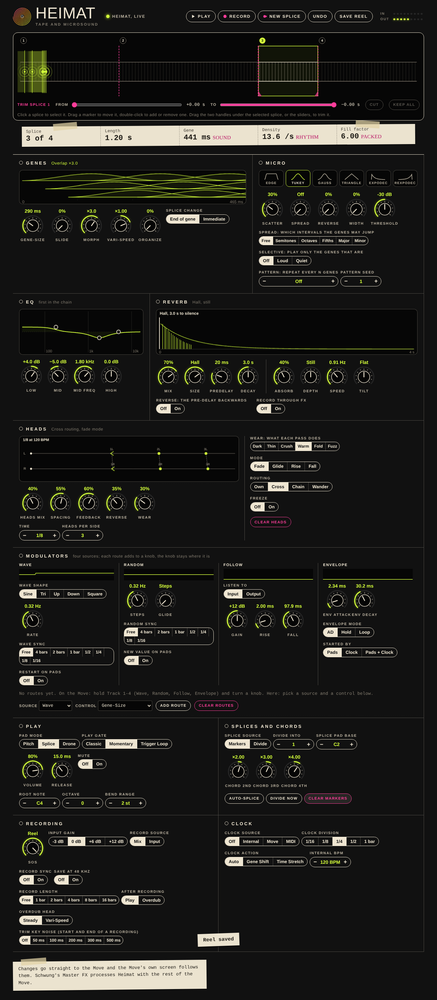

Reel, splice, gene
Heimat works on three time scales at once. You choose material at the scale of seconds, and shape it at the scale of milliseconds.
Reel
A WAV file or something you record, up to 2.9 minutes. Mono or stereo, any sample rate; Heimat converts it to the Move's rate as it loads, without stopping the audio.
Splice
A piece of the reel between two cuts. The cuts come from the file, from equal divisions, from the transients, or from your hand. Organize chooses which splice plays.
Gene
One reading of the splice, with its own start, length, envelope, speed, pitch and place in the stereo field. Genes overlap, leave gaps or scatter into a cloud.
One instrument
Heimat takes over the whole Move: its own pages on the screen, the pads, the encoders, the Move's audio input for recording, and Schwung's Master FX after it.
What it does
Records from the Move input into a new splice or over the current one, cuts the reel by hand or by transients, plays every splice as a cloud of genes, runs it through an EQ, eight tape heads and a reverb, follows the internal, Move or MIDI clock, and saves reels as 32-bit WAV files with their markers into Samples/Heimat.
Coming from Heimat Solo
Up to version 0.8 this instrument was called Heimat Solo, and a second module, Heimat for a track slot, ran the same engine inside a Signal Chain. The track module is suspended for now; the instrument is simply Heimat. It keeps its place in Schwung, so it updates over Heimat Solo and keeps your settings. An old track-slot Heimat stays installed until you remove it.
Install
You need a Move running Schwung 1.7.3 or later. The browser editor needs a recent Schwung with the Remote UI; it was built against Schwung 1.9.
- Download the packageFrom the latest release:
heimat-solo-module.tar.gz(the file keeps the name it has always had, so it updates an installed copy). - Install it from Schwung ManagerWith the Move on the same network, open move.local:7700, go to Modules and install the file as a custom module.
- Restart the MoveHeimat appears in Schwung's module menu with the other takeover modules.
If you build from source, bash scripts/build.sh makes the package and bash scripts/install.sh copies it to move.local over SSH.
Recording uses the Move input. Use headphones or a line-in cable: with the speakers on, the microphone hears the speakers and Schwung may mute the input to avoid feedback.
The surface
Heimat uses the whole Move. Choose a control to see what it does. The map is grouped by kind of control, not drawn to scale.
Choose a control
Each control on the left has one job, or two with Shift. The eight encoders change meaning with the page.
Pages
Track 1 to 4 open the pages. Track 4 cycles through MICRO, MICRO 2, EQ, HEADS, HEADS 2, REVERB, REVERB 2 and the two SETUP pages: each effect has its own page. Track 3 again opens LOOP; Shift and Track 1 open MOD 1 and MOD 2. Shift and Track 4 jump straight to REVERB (again: to EQ), Shift and Track 3 to HEADS. Each encoder turns the cell above it: a slow turn moves a control by a four-hundredth of its range, a fast one up to four times as much, and a choice moves one step every two clicks so it never skips. Hold Shift for finer steps.
Turn or touch an encoder and the cells give way to the parameter's full name, its value and a wide bar while you turn; the waveform is never covered. The screens above are drawn by the test suite from the module's own code.
Genes
Five controls decide how the selected splice is read. Try them here: the picture is drawn with the same formulas as the engine.
For a two-second splice at the original speed.
Gene-Size
At zero a gene is the whole splice. Turning up shortens it, from the splice (at most four seconds) down to half a millisecond. The first half of the knob covers genes you still hear as sounds, down to about 130 ms; the second half is for grains, with 10 ms at three quarters. It is a time, so it does not change with the speed.
Slide
Where in the splice the genes start. With long genes it moves the loop; with short ones it scans through the sound.
Vari-Speed
Speed and direction. The centre stops, right plays forward, left plays backward; ±0.5 is the original speed and the ends play twice as fast, an octave up.
Morph
How genes follow each other. Below 0.18 they leave gaps of silence. Around 0.2 they join into a seamless loop. Turning further, they overlap: two, then three at a time. From 0.75 a fourth gene joins, transposed by one of the chord ratios and placed at random in the stereo field.
Organize
Which splice plays, spread evenly over the knob. It changes at the end of the gene or at once (Splice change). The step buttons and the pads in Splice mode pick a splice directly.
Micro
The micro tools come from Curtis Roads' Microsound. All of them are neutral at their default, so Heimat behaves as a simple tape player until you reach for them.
Scatter
Moves the cloud from synchronous to asynchronous. The interval between genes becomes irregular and their start points wander around Slide, from a steady reading to a random one.
Spread and Width
Spread gives every gene its own transposition within ± the set semitones: the frequency band of the cloud. Width gives every gene its own place between left and right.
Intervals
Spread Intervals decides what kind of jumps Spread makes. Free detunes by any amount, for a band of noise; Semitones keeps whole steps. Octaves, Fifths (fourths and fifths), Major and Minor let each gene leap only to those intervals, up or down, or stay at unison, so the cloud turns into a chord. Spread sets the widest jump allowed: Octaves needs Spread at 12 before anything moves.
Gene Reverse
The chance that each gene plays against the tape. At 0 every gene follows Vari-Speed, at 50% forwards and backwards mix evenly, at 100% all of them run the other way. It is decided when a gene starts, so turning it changes the next genes, never the ones already sounding.
Pattern
Chance you can come back to. With Pattern on, every random choice a gene makes (where Scatter starts it, how far Spread moves it, whether it plays backwards, where Width puts it, how long until the next one, which chord tone Morph gives it) repeats every 2 to 32 genes. The cloud becomes a phrase that comes round again. Pattern Seed, from 1 to 999, picks another phrase; each new attack starts it from its first gene. With Pattern off, chance runs free. Both are on the MICRO 2 page, where one box per gene shows where the phrase is.
Selective
Plays only the genes that fall on material louder (Loud) or quieter (Quiet) than the threshold. The skipped genes keep their place in time as silence, so the rhythm of the cloud stays.
Reading the cloud
The MICRO page and the browser editor show three figures, each with a word for how it tends to sound. They are guides for listening, not hard limits.
| Figure | Words |
|---|---|
| Gene length | CLICK below 2 ms, GRAIN up to 40 ms, SOUND above |
| Density | RHYTHM below 15 genes a second, FLUTTER to 25, FLOW to 50, TEXTURE to 100, MASS above |
| Fill factor | SPARSE below 0.5, COVERED around 1, PACKED above |
Modulators
Four sources that move the controls for you. A route adds a source to a control on top of where its knob stands; the knob itself stays put, and that is what is saved.
The four sources
- Wave: sine, triangle, ramp up, ramp down or square, from 0.02 to 20 Hz or in time from four bars to a sixteenth. It can restart with each pad.
- Random: a new value at each step. Smooth turns the steps into glides. Free or in time; it can also take a new value with each pad.
- Follow: the level of the input or of Heimat's own output, with gain, rise and fall. Play louder and the control moves further.
- Envelope: attack and decay, started by the pads, the clock or both. Hold keeps it up while a pad is down; Loop starts it again at the end.
Wave and Random swing both ways around the knob; Follow and Envelope only push one way. Their settings are on the MOD 1 and MOD 2 pages (Shift + Track 1).
Routing
Hold Track 1 (Wave), Track 2 (Random), Track 3 (Follow) or Track 4 (Envelope) and turn a knob: the turn sets how far that source moves the control, from −100% to +100% of its range. Turn back to zero to remove the route. Let go without turning and the button changes page as usual.
A modulated cell carries a flag down its left edge. Hold a Track button and press Delete to remove all of that source's routes. Up to sixteen routes; choices such as the envelope shape or the clock source cannot be modulated. The browser editor lists the routes with a depth slider each, and adds new ones.
Recording and clock
Heimat records from the Move input while it plays, and follows a clock.
Two ways to record
- Record records over the current splice. The write point wraps round the splice, so layers pile up.
- Shift + Record or Sample records into a new splice at the end of the reel.
Sound on Sound sets the balance of input and playback in what you hear and record. Record Source chooses whether that mix or the input alone goes onto the reel. Input Gain has four steps, from −3 to +12 dB.
Looper tape
The LOOP page (Track 3 twice) turns recording into a looper. Record Length stops a new-splice recording by itself after 1, 2, 4, 8 or 16 bars at Heimat's tempo; Free waits for you. After Recording decides what follows: Play the new splice, or Overdub, which goes straight on recording over the loop just closed until you stop it, whether the loop ended by itself or you closed it.
Overdub Head decides how the write head moves when you record over a splice. Steady writes at the speed of time, whatever the playback does. Vari-Speed runs it with the tape: overdub at half speed and it comes back an octave up, overdub backwards and it plays forwards, stop the tape and nothing is written.
Trimming
Recording on the Move itself means the buttons you press can end up on the tape. Two ways out. Trim Key Noise (LOOP page) skips 50 to 500 ms at the start of a recording and takes as much off the end: a new splice gets shorter, an overdub gets back what was there before. It only acts when you press: a start or stop on a clock tick, or at the end of a Record Length, is left alone.
Trim splice (Shift + Capture, or the menu) keeps only part of the selected splice. Knob 1 moves the start, knob 2 the end, knob 3 zooms on the last point moved and the jog nudges it; what will go is drawn dotted, and the genes already play only what will stay. Jog click or Capture cuts, with a short fade at each cut; Back leaves everything as it was; Undo brings the cut back. The rest of the reel moves up, and its markers with it. The browser editor has the same two sliders under Splices.
Save writes the reel as a 32-bit float WAV with its markers into UserLibrary/Samples/Heimat, at the Move's rate or at 48 kHz.
Clock
Internal BPM, the Move's transport or MIDI clock, divided from 1/16 to a bar. Each tick either steps to the next gene (Gene Shift) or makes the start point glide through the splice (Time Stretch). Auto uses Gene Shift up to Morph 2/1 and Time Stretch above.
With Record Sync on, recording starts and stops on the next tick. Loop switches the clock on and off; Shift + Loop changes the source.
EQ and effects
An EQ, the heads and a reverb, in that order, after the playback and input mix and before the volume. Each has its own page on the Move and its own panel in the editor. They are off by default and cost nothing until you use them.
EQ
Low shelf at 180 Hz, a mid band you can tune from 100 Hz to 8 kHz, high shelf at 5 kHz, ±15 dB each. On the Move the EQ page also holds how much goes to the heads and to the reverb, Record through FX and the volume.
Record through FX
The effects can go onto what you record. Recording over a splice then piles up echoes and reverb on every pass. Off, recordings stay dry and the effects are only in what you hear.
Schwung's own effects
Heimat's output joins the Move's mix before Schwung's Master FX, so the effects you load there process Heimat too.
Heads
A loop of tape with several playback heads. Each head is an echo of its own; the heads can be spread out, read backwards, feed one another, and wear the sound a little more on every pass. It sits between the EQ and the reverb, and like the reverb it is off until you turn its Mix up.
Time and heads
Time is a note value from two bars to 1/128, at Heimat's tempo: the internal BPM, the Move's or MIDI clock. Heads sets one to four heads per side, up to eight. Spacing spreads them from a tight cluster, where the echoes come out like a strummed chord, to wide intervals; it also pulls the right side a little away from the left, which with a single head acts as a fine detune.
Feedback and reverse
Feedback goes from a single repeat to an endless one: at the top the tape keeps everything, so watch the level. Reverse turns heads around one by one, in the order 1L, 1R, 2L, 2R, until all of them read backwards.
Wear
What each pass does to the sound, set with its amount: Dark closes a four-pole low-pass, Thin a four-pole high-pass, Crush lowers the bits and the sample rate, Warm saturates, Fold folds the wave, Fuzz clips hard. Because it acts in the feedback, every repeat is more worn than the one before.
Mode
Fade cross-fades to a new time without a jump. Glide lets the time bend like tape, with a pitch sweep. Rise shifts every repeat an octave up, Fall an octave down, so the echoes climb or sink as they fade. Heads that read backwards are not shifted.
Routing
Own: each head feeds itself. Cross: each head feeds the same head on the other side, so the echoes bounce left and right. Chain: the heads of a side in series, the last back into the first, for long, slow echoes; Heads then sets how many of the four you hear. Wander: in series, crossing sides at every step.
Freeze and clear
Freeze keeps what is on the tape and loops it, ignoring the input; change Time while frozen to cut it into new rhythms. Clear heads (in the menu and in the editor) silences everything at once.
Shift and Track 3 open the HEADS page; Track 4 also reaches HEADS and HEADS 2 after EQ.
Reverb
The last effect: a space whose size goes from a box to a sky, with a pre-delay that can run backwards, a decay that can hold forever, and an inner motion that ranges from chorus to wandering walls to a shimmer an octave up. It is off until you turn its Mix up.
Size
The size of the space, on one knob: from a box where the reflections come a millisecond apart, through rooms, studios and halls, to caves and a sky no building could hold. Every distance in the space scales at once, so turning Size glides from one space to another, with a bend in pitch on the way. At the same Decay, a bigger space rings longer.
Pre-delay and Reverse
How long the sound travels before the space answers, 7 to 500 ms, independent of Size: a small room far away, or a huge one right beside you. Turning it while the sound plays bends the pitch. Reverse plays the pre-delay backwards in pieces of its own length, so the sound reaches the space reversed.
Decay
How long the tail lasts, from about a tenth of a second to a minute. At the top of the knob the tail never ends: what is in the space stays there, and with Depth it keeps changing.
Absorb
What the walls do. The first third of the knob makes the space denser, so the echoes merge quickly; past that it also takes away the highs on every reflection, so the tail grows darker and shorter, like a room full of curtains.
Depth and Speed
An inner motion of the space. At the centre the space is still. To the left the distances swing together in eight phases, a chorus that turns into deep swirls. To the right each distance wanders on its own, so the room seems to change shape, grainier as you go. At the far right an octave above the tail is fed back in: shimmer. Speed sets how fast, from one cycle in twenty seconds to two hundred a second.
Tilt
The tone of the reverb, after everything else: to the left the lows rise and the highs dip a little, for a thick, dark space; to the right the lows thin out and the highs shine. It does not change how long the tail lasts.
Shift and Track 4 open the REVERB page. REVERB 2 holds Reverse and Record through FX.
The browser editor
Every parameter, the reel and the genes, on a computer or a phone on the same network. What you change in the browser reaches the Move at once, and what you turn on the Move shows in the browser.

- Open Remote UIGo to move.local:7700 and choose Remote UI.
- Find HeimatWhile Heimat runs, its editor is under the Tool tab. The pop-out button opens the editor in a window of its own.
- PlayClick a splice to select it, drag a cut to move it, double-click to add or remove one. Drag the three points of the EQ curve. Double-click a knob to reset it; Shift while dragging for fine steps. Knobs also take the arrow keys.
Parameter reference
Every parameter, with its key, range and starting value. This table is generated from the engine's source, so it matches the module.
| Name | Key | Range | Default |
|---|---|---|---|
| Genes | |||
| Gene-Size | gene_size | 0 to 1 | 0 |
| Slide | slide | 0 to 1 | 0 |
| Morph | morph | 0 to 1 | 0.18 |
| Vari-Speed | vari_speed | -1 to 1 | 0.5 |
| Organize | organize | 0 to 1 | 0 |
| Organize Change | organize_mode | End of Gene / Immediate | End of Gene |
| Micro | |||
| Gene Envelope | gene_window | Edge / Tukey / Gauss / Triangle / Expodec / Rexpodec | Edge |
| Scatter | scatter | 0 to 1 | 0 |
| Pitch Spread (st) | spread | 0 to 12 | 0 |
| Spread Intervals | spread_mode | Free / Semitones / Octaves / Fifths / Major / Minor | Free |
| Gene Reverse | gene_reverse | 0 to 1 | 0 |
| Stereo Width | width | 0 to 1 | 0 |
| Threshold | threshold | 0 to 1 | 0.5 |
| Selective | thr_mode | Off / Loud / Quiet | Off |
| Pattern | pattern | Off / 2 / 3 / 4 / 5 / 6 / 8 / 12 / 16 / 32 | Off |
| Pattern Seed | pattern_seed | 1 to 999 | 1 |
| EQ | |||
| EQ Low (dB) | eq_low | -15 to 15 | 0 |
| EQ Mid (dB) | eq_mid | -15 to 15 | 0 |
| EQ Mid Freq (Hz) | eq_freq | 100 to 8000 | 1000 |
| EQ High (dB) | eq_high | -15 to 15 | 0 |
| Heads | |||
| Heads Mix | hd_mix | 0 to 1 | 0 |
| Heads Time | hd_time | 2 bars / 1 bar / 1/2. / 1/2 / 1/4. / 1/4 / 1/8. / 1/8 / 1/8T / 1/16 / 1/16T / 1/32 / 1/64 / 1/128 | 1/8 |
| Heads | hd_heads | 1 to 4 | 2 |
| Head Spacing | hd_spacing | 0 to 1 | 0.3 |
| Heads Feedback | hd_fdbk | 0 to 1 | 0.45 |
| Reverse Heads | hd_reverse | 0 to 1 | 0 |
| Wear | hd_wear | Dark / Thin / Crush / Warm / Fold / Fuzz | Dark |
| Wear Amount | hd_wear_amt | 0 to 1 | 0 |
| Heads Mode | hd_mode | Fade / Glide / Rise / Fall | Fade |
| Heads Routing | hd_route | Own / Cross / Chain / Wander | Own |
| Freeze Heads | hd_freeze | Off / On | Off |
| Reverb | |||
| Reverb Mix | rev_mix | 0 to 1 | 0 |
| Reverb Size | rev_size | 0 to 1 | 0.5 |
| Reverb Pre-Delay (ms) | rev_predelay | 7 to 500 | 20 |
| Reverb Reverse | rev_reverse | Off / On | Off |
| Reverb Decay | rev_decay | 0 to 1 | 0.5 |
| Reverb Absorb | rev_damp | 0 to 1 | 0.4 |
| Reverb Tilt | rev_tilt | -1 to 1 | 0 |
| Reverb Mod Depth | rev_depth | -1 to 1 | 0 |
| Reverb Mod Speed | rev_speed | 0 to 1 | 0.35 |
| Modulators | |||
| Wave Shape | mod_wave_shape | Sine / Triangle / Ramp Up / Ramp Down / Square | Sine |
| Wave Rate | mod_wave_rate | 0 to 1 | 0.4 |
| Wave Sync | mod_wave_sync | Free / 4 bars / 2 bars / 1 bar / 1/2 / 1/4 / 1/8 / 1/16 | Free |
| Wave Restart | mod_wave_retrig | Off / On | Off |
| Random Rate | mod_rand_rate | 0 to 1 | 0.4 |
| Random Smooth | mod_rand_smooth | 0 to 1 | 0 |
| Random Sync | mod_rand_sync | Free / 4 bars / 2 bars / 1 bar / 1/2 / 1/4 / 1/8 / 1/16 | Free |
| Random On Pads | mod_rand_retrig | Off / On | Off |
| Follow Source | mod_follow_src | Input / Output | Input |
| Follow Gain | mod_follow_gain | 0 to 1 | 0.5 |
| Follow Attack | mod_follow_attack | 0 to 1 | 0.1 |
| Follow Release | mod_follow_release | 0 to 1 | 0.4 |
| Envelope Attack | mod_env_attack | 0 to 1 | 0.1 |
| Envelope Decay | mod_env_decay | 0 to 1 | 0.4 |
| Envelope Mode | mod_env_mode | AD / Hold / Loop | AD |
| Envelope Trigger | mod_env_trigger | Pads / Clock / Pads + Clock | Pads |
| Play | |||
| Pad Mode | pad_mode | Pitch / Splice / Drone | Pitch |
| Play Gate | play_mode | Classic / Momentary / Trigger Loop | Momentary |
| Release (ms) | release_ms | 1 to 2000 | 15 |
| Root Note | root_note | 0 to 127 | 60 |
| Octave | octave_transpose | -3 to 3 | 0 |
| Bend Range | bend_range | 0 to 12 | 2 |
| Volume | volume | 0 to 1 | 0.8 |
| Mute | mute | Off / On | Off |
| Splices and chords | |||
| Splice Source | splice_source | Markers / Divide | Markers |
| Divide Into | divide | 1 to 32 | 8 |
| Splice Pad Base | splice_base | 0 to 120 | 36 |
| Morph Chord 2nd | mcr1 | -16 to 16 | 2 |
| Morph Chord 3rd | mcr2 | -16 to 16 | 3 |
| Morph Chord 4th | mcr3 | -16 to 16 | 4 |
| Recording | |||
| Sound On Sound | sos | 0 to 1 | 1 |
| Input Gain | in_gain | -3 dB / 0 dB / +6 dB / +12 dB | 0 dB |
| Record Source | rec_source | Mix / Input | Mix |
| Record Sync | rec_sync | Off / On | Off |
| Record Length | rec_length | Free / 1 bar / 2 bars / 4 bars / 8 bars / 16 bars | Free |
| After Recording | rec_after | Play / Overdub | Play |
| Overdub Head | rec_head | Steady / Vari-Speed | Steady |
| Trim Key Noise | rec_trim | Off / 50 ms / 100 ms / 200 ms / 300 ms / 500 ms | Off |
| Record Through FX | fx_rec | Off / On | Off |
| Save at 48 kHz | save_48k | Off / On | Off |
| Clock | |||
| Clock Source | clock_source | Off / Internal / Move / MIDI | Off |
| Clock Division | clock_div | 1/16 / 1/8 / 1/4 / 1/2 / 1 bar | 1/4 |
| Clock Action | clock_mode | Auto / Gene Shift / Time Stretch | Auto |
| Internal BPM | bpm | 20 to 300 | 120 |